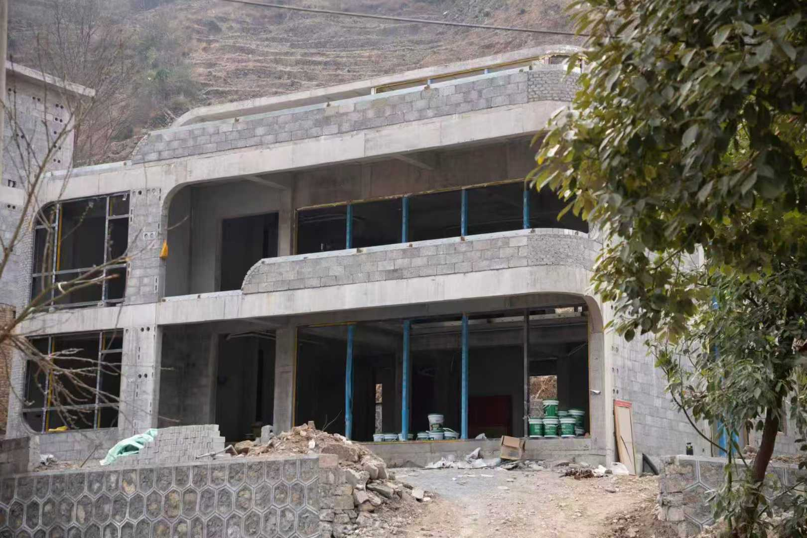
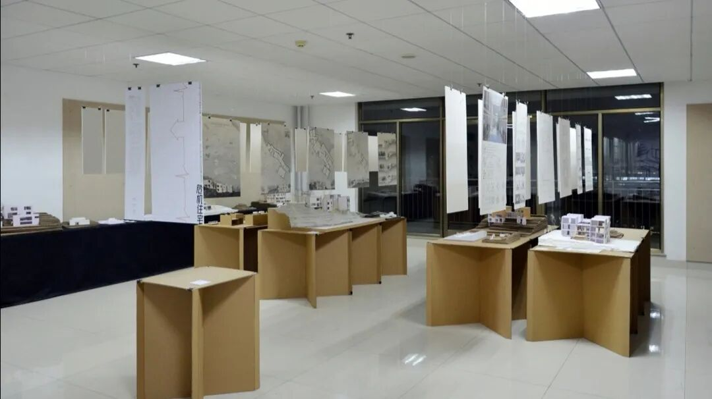
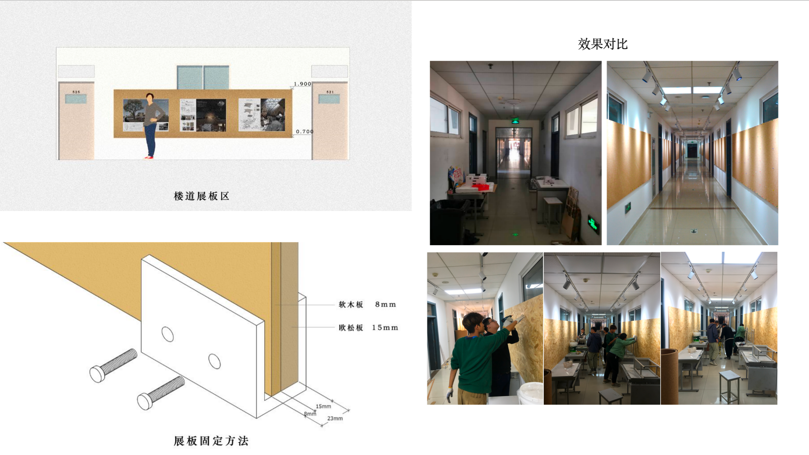
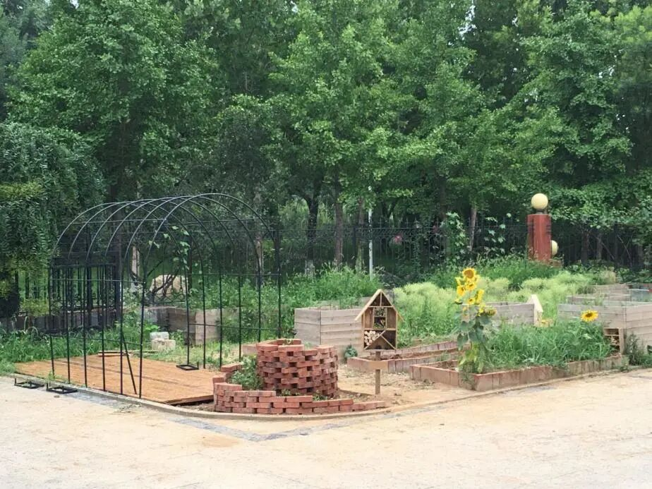
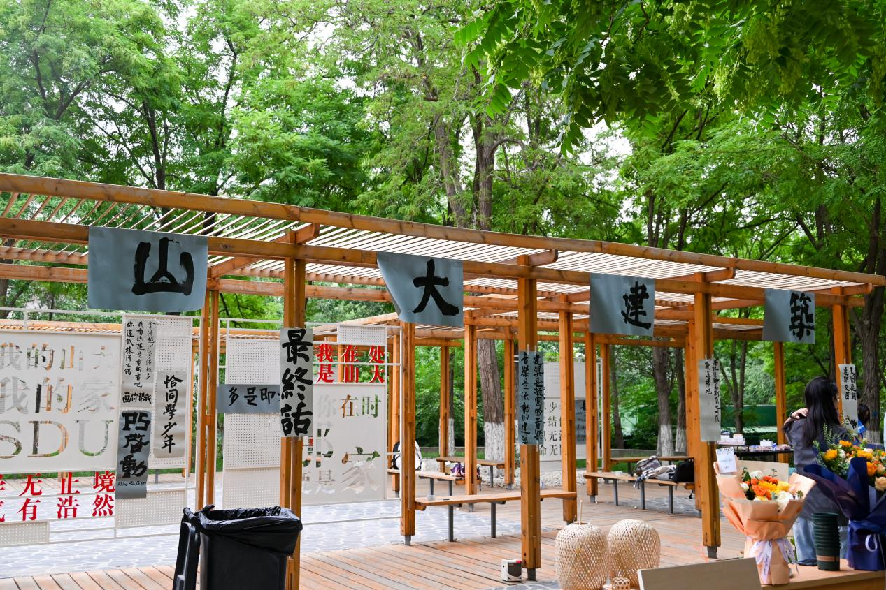
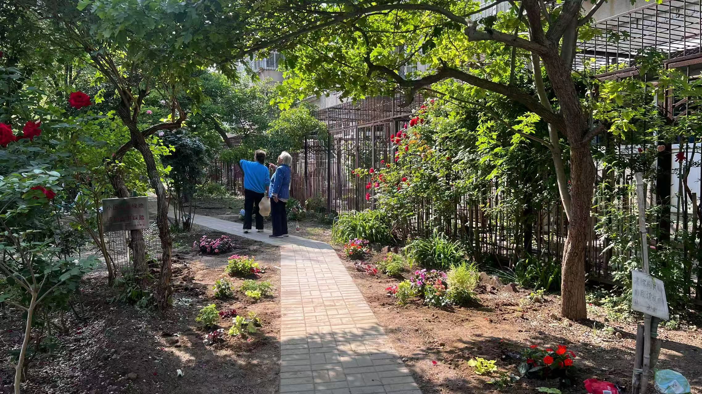
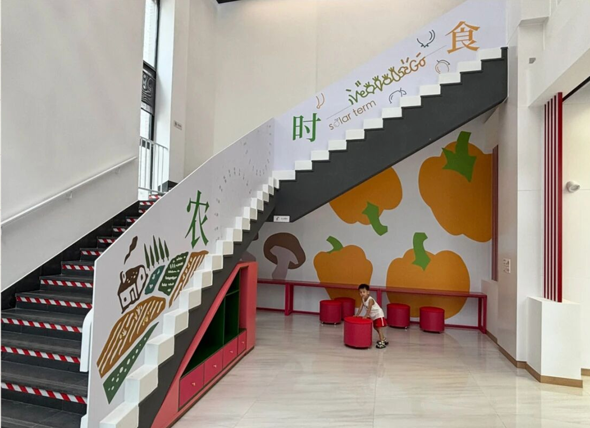
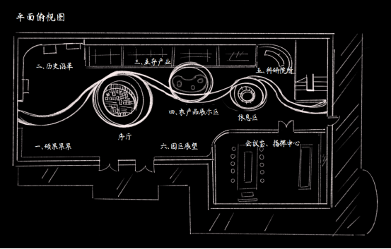

Black / White / Geometry / Motion
Designing spatial systems with restraint, structure, and precise visual rhythm.
I design architectural, interior, and public-space projects with a minimalist visual language. This portfolio focuses on built work, construction coordination, and spatial storytelling translated into a calm black-and-white interface.
- Focus
- Architecture, interior renovation, installation
- Base
- Berlin / Beijing
- Method
- Concept, detailing, site coordination
Construction Log Outline
Content structure imported from the PPT cover page.
Skills
- Woodworking
- Hand tools and assembly
- Basic construction coordination
- 3D printing
- Modeling: Rhino, CAD, SketchUp
- Python
Project index
- 01 Rural House Design, Guizhou
- 02 Public Exhibition Space, Shandong University
- 03 Classroom and Corridor Renovation, Shandong University
- 04 Edible Pocket Garden, Shandong University
- 05 Campus Leisure Plaza, Shandong University
- 06 Community Garden, Peking University
- 07 Cafeteria Space Renovation, Peking University
- 08 Exhibition Hall Interior, Ningbo
About
A portfolio shaped like a construction notebook.
I am Haoran Liu, a designer working across architecture, interior renovation, and small-scale public space interventions. My work often sits between design intention and on-site execution.
Instead of presenting only finished imagery, I also highlight process, detailing logic, and construction coordination. The goal is to show how visual order becomes spatial order.
Tools
Rhino, CAD, SketchUp, Python, hand tools, fabrication workflows
Capabilities
Spatial concepting, furniture systems, exhibition build-outs, site collaboration
Selected Works
Built projects, temporary structures, and interior interventions.

01
Rural House Design
I designed a 400 sqm three-story villa and coordinated the whole process with the construction team.

02
Public Exhibition Space
A temporary exhibition intervention made from cardboard and fishing line.

03
Classroom & Corridor Renovation
Furniture redesign and corridor activation with low-cost sheet materials.

04
Edible Pocket Garden
A campus landscape project built as a daily recreational garden.

05
Campus Leisure Plaza
Unused green space converted into an active leisure area.

06
Community Garden at PKU
A vacant block turned into an accessible shared neighborhood landscape.

07
Cafeteria Space Renovation
A multifunctional dining and social area redesigned with clear spatial identity.

08
Exhibition Hall Interior
Interior design and technical detailing for a built showroom project.
Construction Log
Images grouped by project and stacked as construction records.
01
Rural House Design
02
Public Exhibition Space
03
Classroom and Corridor Renovation
04
Edible Pocket Garden
05
Campus Leisure Plaza
06
Community Garden at PKU
07
Cafeteria Space Renovation
08
Exhibition Hall Interior
Commission
Open for selected architecture, installation, and interior projects.
Project scope
- Small-scale architecture and renovation concepts
- Public-space installations and campus interventions
- Interior spatial refresh and visual systems
- Construction-oriented presentation materials
Expected input
Please include your project brief, site condition, timeline, expected deliverables, and budget range. The more specific the brief, the more accurately I can respond.